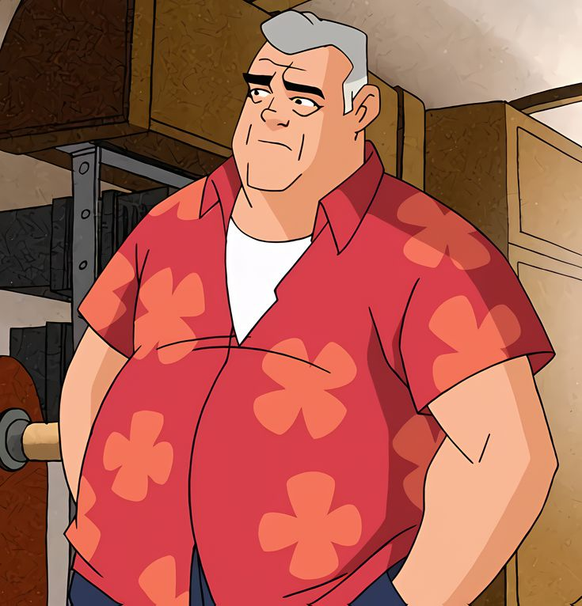

Nome completo:Maxwell Tennyson.
Idade:
60 anos
Maxwell Tennyson é o avô de Ben e Gwen.
É um ex-encanador que fazia parte de uma organização que caça ameaças alienígenas.
Guia moral para Ben e Gwen.
Conheça o dublador do Vovô Max